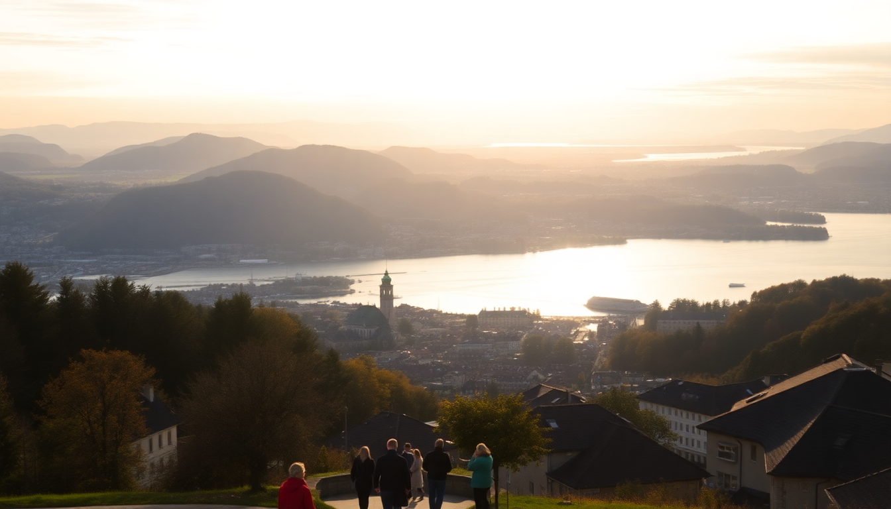

Best Time to Visit Switzerland: Month-by-Month Guide

I’ve been to Switzerland in every season, and the “best” time really depends on what you want to do. If you’re here for hiking, you want summer. Skiing? Winter. But there’s a sweet spot in late spring and early autumn when the crowds thin out and the prices drop. This guide breaks down each month so you can pick the window that fits your trip.
When is the best time to visit Switzerland for good weather?
For stable, warm weather across the country, aim for June through August. That’s when Zurich and Lucerne hit 25°C, and the mountain trails around Interlaken and Zermatt are fully open. I hiked the Eiger Trail near Interlaken in late July and didn’t need a jacket until I hit the treeline. But expect crowds—especially in Lucerne’s Chapel Bridge area and on the Gornergrat Railway in Zermatt.
- June offers long daylight hours (up to 16 hours) and lower prices than July.
- July is peak season; book the Hotel Schweizerhof in Lucerne months ahead.
- August can bring afternoon thunderstorms; I got soaked near Lake Zurich one afternoon.
When is the cheapest time to visit Switzerland?
The cheapest months are November (excluding late December), January, and March. I flew into Zurich Airport in mid-January and paid half the summer rate for a room at Hotel Adler in the Niederdorf district. The catch: many mountain cable cars and smaller restaurants in Zermatt close for maintenance in November. In March, the ski season still runs, but hotel prices drop after mid-March.
- November is dead season—quiet in Interlaken’s Höheweg but good for museum days.
- January after New Year’s is dead cheap; I skied Zermatt’s Rothorn slopes with almost no lift lines.
- March offers late-season skiing; the Sunnegga area in Zermatt stays open into April.
When is the best time to visit Switzerland for skiing?
If you’re here for snow, December through February is prime. I’ve had my best powder days in Zermatt in January—specifically on the Klein Matterhorn glacier runs. The Matterhorn Glacier Paradise stays open year-round, but the lower runs near Riffelberg are best in January and February. Crowds peak over Christmas and February school holidays, so ski pass prices jump.
- December has holiday charm in Zurich’s Christkindlimarkt at Hauptbahnhof, but slopes can be icy early on.
- January delivers consistent snow; I recommend the Blauherd area for intermediates.
- February is busiest; book the Mont Cervin Palace in Zermatt by October.
What is Switzerland like in spring (March–May)?
Spring is unpredictable. I visited Lucerne in early April and got both sun and sleet in the same day. The Lion Monument was surrounded by wet cobblestones, but the Swiss Transport Museum was a good indoor backup. By May, the Lake Lucerne promenade is pleasant, and the Jungfraujoch train from Interlaken runs without weather delays. Wildflowers bloom in Zermatt by late May, but the Matterhorn views are still snowy.
- March can be slushy; stick to lower-altitude walks like Zurich’s Lindenhof.
- April has Easter markets; Interlaken’s Höhematte park is green but muddy.
- May is a sweet spot—fewer tourists, and the Harder Kulm funicular reopens near Interlaken.
What is Switzerland like in autumn (September–November)?
September is my favorite month in Switzerland. The summer crowds thin, the larch trees in Zermatt turn gold, and the air is crisp. I walked the Five Lakes Walk near Zermatt in late September and had the trail almost to myself. Lucerne’s Old Town felt relaxed. October is still good for hiking, but November is a slog—many mountain huts close, and Zurich gets gray and drizzly.
- September is ideal for hiking; the Oeschinensee trail above Kandersteg is stunning.
- October works for city visits; I liked Zurich’s Niederdorf for quiet evenings.
- November is best for indoor activities; the Kunsthaus Zurich art museum is worth a full day.
What about festivals and events?
Switzerland has a few events worth timing your trip around. Zürich Film Festival (September) brings crowds to the Seefeld district. Lucerne Festival (August–September) fills the KKL Luzern concert hall with classical music. In Zermatt, the Zermatt Unplugged music festival in April is small but lively. Avoid the Street Parade in Zurich (August) if you dislike massive crowds and techno music—I found it overwhelming.
- Zürich’s Sechseläuten (April) is a spring tradition with a snowman burning.
- Lucerne’s Fasnacht (February) is a pre-Lent carnival with costumes in the Old Town.
- Interlaken’s Jungfrau Marathon (September) closes roads—book early.
FAQ
Is Switzerland worth visiting in winter if I don’t ski? Yes. I spent a non-skiing week in Zermatt in January and enjoyed the Matterhorn Glacier Paradise, the Zermatt Matterhorn Museum, and long dinners at Chez Vrony. Zurich and Lucerne have Christmas markets through late December. Just bring layers—winter temps in Zurich hover around 0°C.
What is the rainiest month in Switzerland? June and July have the most precipitation, often as short afternoon thunderstorms. I got caught in a downpour while hiking the Männlichen to Kleine Scheidegg trail in July. Carry a light rain jacket. May and August are also wet, but November is the cloudiest month overall.
Can I visit both cities and mountains in one trip? Easily. The Swiss Travel Pass covers trains between Zurich, Lucerne, Interlaken, and Zermatt. I did Zurich to Lucerne in 45 minutes, then Lucerne to Interlaken in two hours. Zermatt is a 2.5-hour train from Interlaken via Visp. Plan at least 2–3 days per location to avoid rushing.
Conclusion
- June to September is best for hiking and warm weather, but book accommodation early.
- December to February is peak ski season; Zermatt and Interlaken are the hubs.
- May and September offer the best balance of decent weather and lower prices.
- November and January (post-New Year) are cheapest, but expect closures or limited mountain access.
- Base your decision on whether you want snow, sun, or savings—Switzerland works year-round if you plan for the trade-offs.